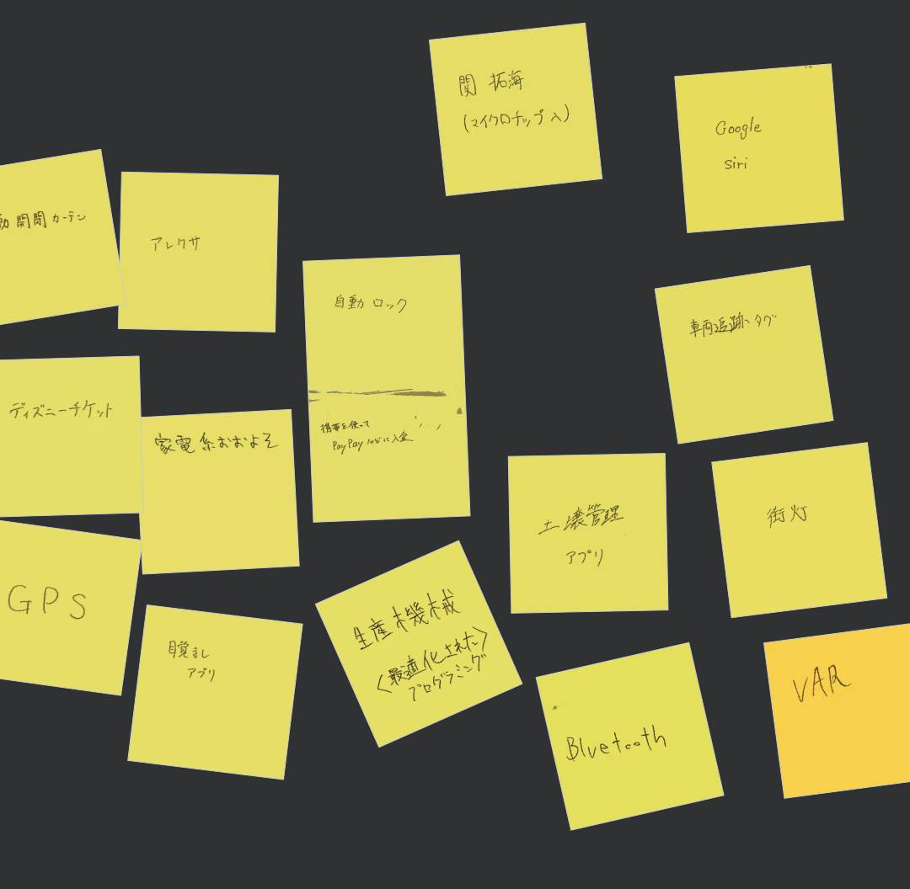
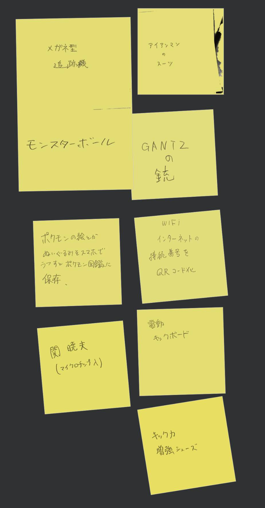
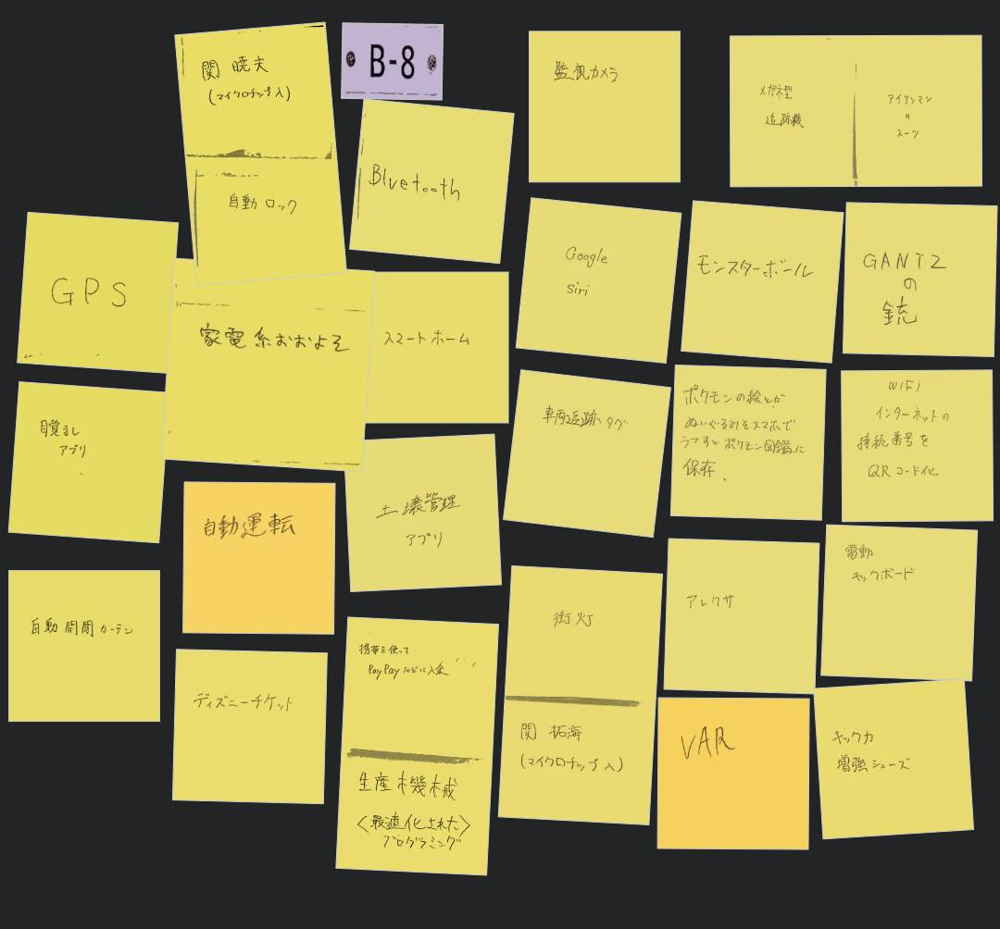
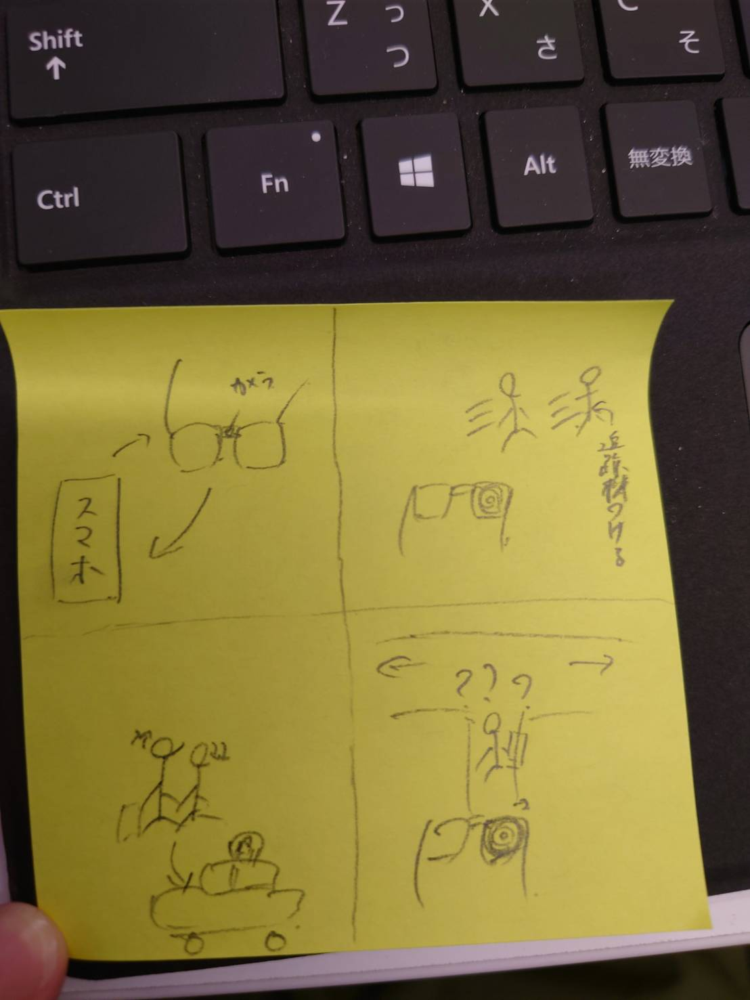

IOTについて
IoT（Internet of Things）は、インターネットに接続された物理的なデバイスや機器のネットワークです。
これらのデバイスは、センサーやアクチュエーターを備え、データの収集、共有、制御、自動化が可能になります。
IoTの利点には、リモート監視、データ収集、自動化、省エネルギー、コスト削減、および快適性の向上が含まれます。
IoTは、様々な産業や分野で利用されており、自動車、工場、家庭、農業、医療、都市インフラなど、多岐にわたる応用があります。
IoTは、人々の生活やビジネスを変革し、効率的でスマートな世界を実現するための革新的なテクノロジーの一つです。
グループで話し合った意見 ポストイット



スケッチしたもの
iotを用いて眼鏡で追跡を行うことの出来るもの
